Exploratory validation. Input drift is not proof of unfairness. Charts 7–8 are analytical teaching/planning examples; other charts come from saved experimental runs. Code and visual production were AI-assisted.
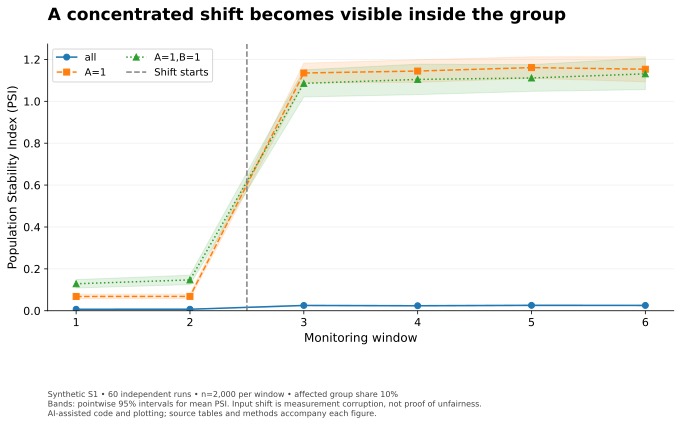
Mean signal-feature PSI under S1. Reference is fixed within each run; bands summarize independent runs. The affected group is A=1; A=1,B=1 is a smaller intersection.
PDF · 300 dpi PNG · SVG · Source data · Provenance
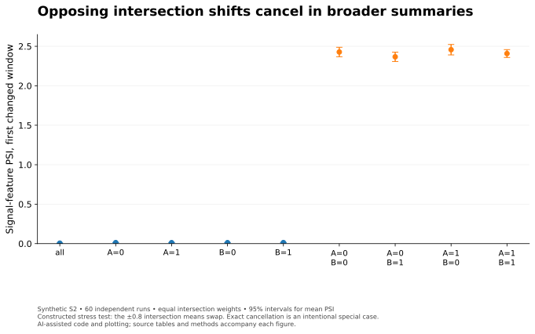
Empirical PSI under a predeclared constructed cancellation scenario. This stress test demonstrates a blind spot of aggregation, not its prevalence in real deployments.
PDF · 300 dpi PNG · SVG · Source data · Provenance
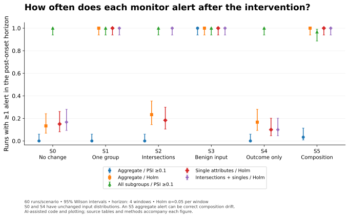
Run-level probability of any post-onset input alert. All methods see the same data and frozen bins. Fixed PSI thresholds are practical baselines, not matched-error tests; Holm families contain 2, 10 and 18 tests.
PDF · 300 dpi PNG · SVG · Source data · Provenance
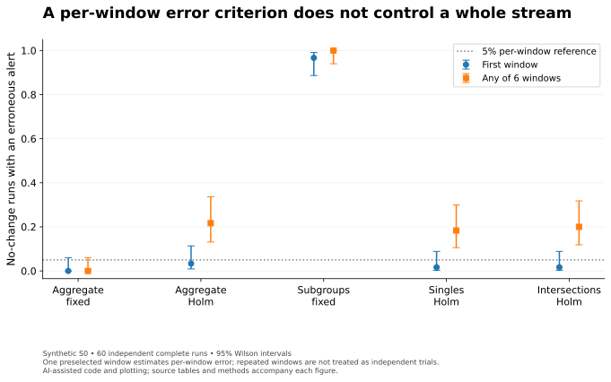
False alerts under S0, with the first window and complete stream estimated separately. Within-window Holm correction does not promise horizon-wide control.
PDF · 300 dpi PNG · SVG · Source data · Provenance
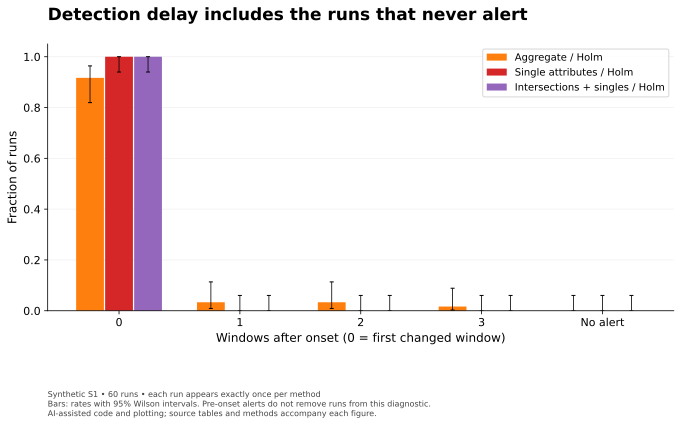
Full delay distribution under S1, including non-detections. Bars show proportions and Wilson intervals for each delay category; coverage is not simultaneous across categories.
PDF · 300 dpi PNG · SVG · Source data · Provenance
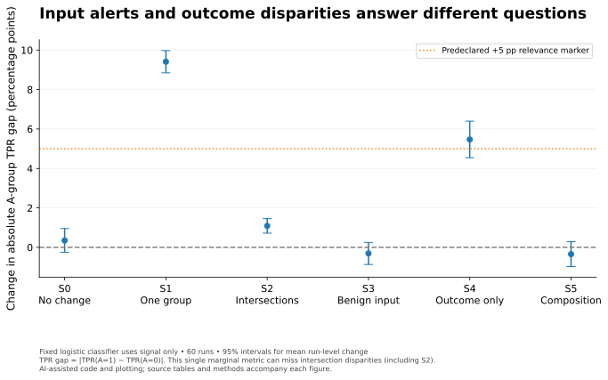
A-group true-positive-rate gap change relative to a separate baseline audit. First average post-onset windows within each run, then form a run-level interval. Positive means wider gap; a lower gap is not a general fairness guarantee.
PDF · 300 dpi PNG · SVG · Source data · Provenance
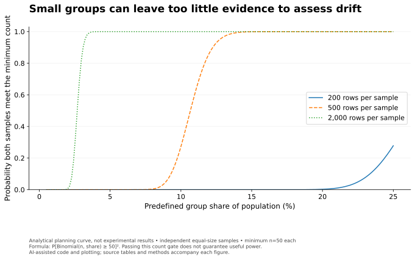
Exact binomial planning calculation for a predefined group in two independent equal-size samples. This figure is analytical and makes no empirical coverage claim.
PDF · 300 dpi PNG · SVG · Source data · Provenance
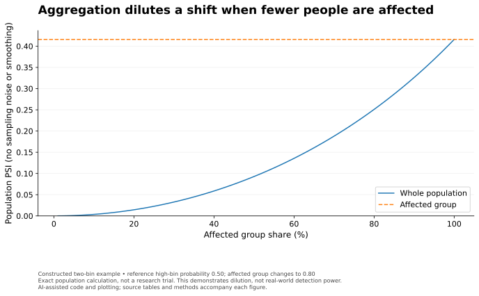
A teaching example calculated directly from two-bin population probabilities. There are no sample counts, seeds or uncertainty intervals because no random experiment is represented.
PDF · 300 dpi PNG · SVG · Source data · Provenance
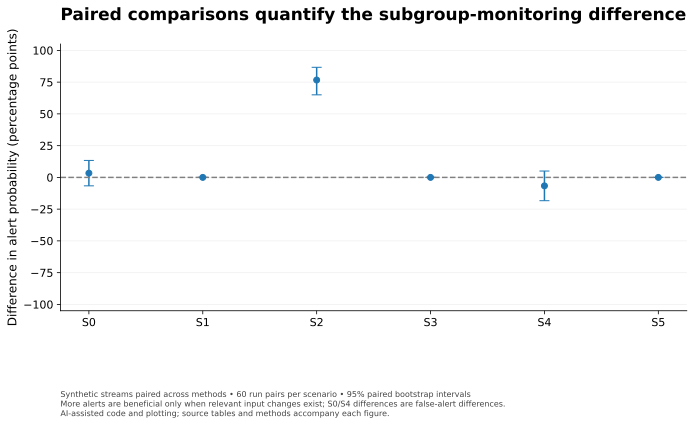
Difference between B2 and A1 post-onset any-alert proportions using the same simulated runs. Percentile bootstrap intervals resample paired complete runs, not windows; degeneracy at all-equal differences is a limitation.
PDF · 300 dpi PNG · SVG · Source data · Provenance
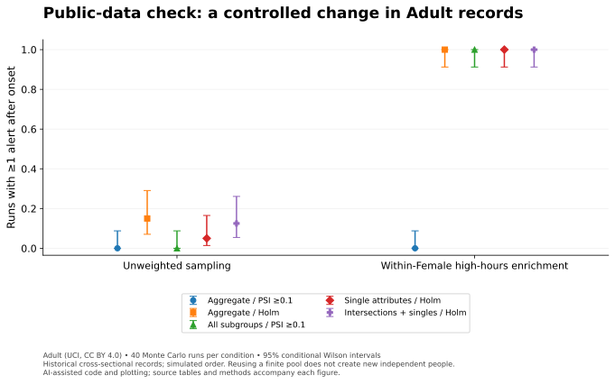
Semi-synthetic Adult check, conditional on one deduplicated fixed split, classifier and monitoring pool. Within selected Female/age strata, records with hours>40 receive 6× sampling weight after onset. Labels and records are unchanged; composition counts use the original pool proportions. Becker & Kohavi (1996), DOI 10.24432/C5XW20, CC BY 4.0.
PDF · 300 dpi PNG · SVG · Source data · Provenance
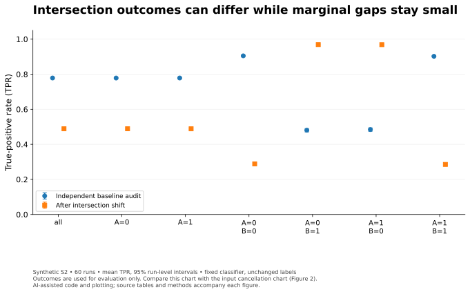
Baseline and post-onset TPR for aggregate, marginal A groups and intersections in S2. After averaging windows within each run, intervals use independent runs. Marginal outcome summaries alone can conceal large intersection differences.
PDF · 300 dpi PNG · SVG · Source data · Provenance